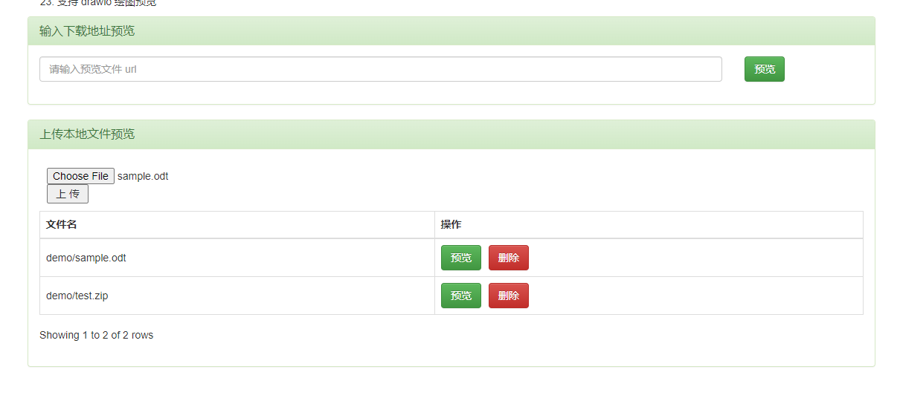
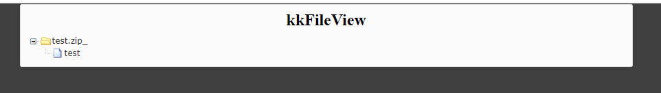
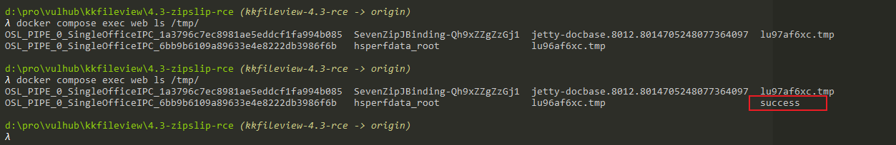

kkFileView ZipSlip Remote Code Execution¶
kkFileView is an open source document online preview solution.
In the version prior to 4.4.0-beta, kkFileView has a ZipSlip issue. Attackers can use this issue to upload arbitrary files to the server and execute code.
References:
Vulnerable environment¶
Execute following command to start a kkFileView 3.4.0:
docker compose up -d
After the server is started, you can see the index page at http://your-ip:8012.
Exploit¶
First, generate a craft POC by poc.py:
python poc.py
A test.zip file will be written.
Upload test.zip and the sample.odt to the kkFileView server:

Then, click the "preview" button of test.zip, the zip file will be listed:

Finally, click the "preview" button of sample.odt.
You can see the touch /tmp/success has been executed successful:
